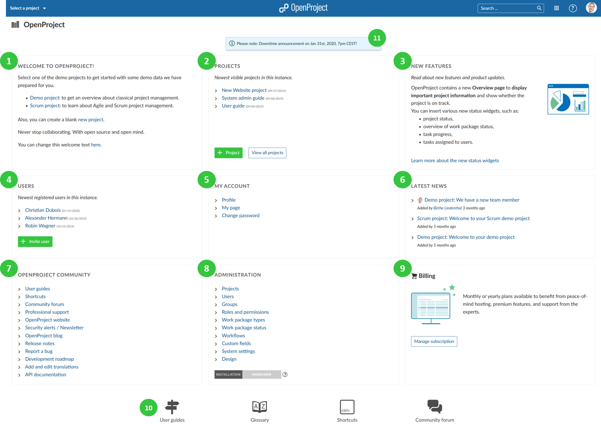

Application start page
On the application start page (home page) you will get an overview about important information.
To get to the application start page, click on the logo in the header of the application.

- Welcome text block to welcome your team members, share important project information, or any other information. You can configure the welcome text block under -> Administration -> System settings -> General.
- The projects block displays your latest project. You can create a new project or view all projects.
- The new features block displays feature announcements and developments of the latest releases of OpenProject.
- The Users block displays latest registered users on the instance. You can invite new users with the green + Invite users button.
- The My Account block links to important account settings, such as the user profile, the My page, and the change password section.
- The latest news block displays latest news from all your projects. Click on the link of the news to read the details.
- The OpenProject Community block displays links to important community information, such as release notes, forum, or the API documentation.
- Administration block displays links to important system administration resources. Also, the application security badge will be displayed when activated.
- The Billing block will be displayed for the OpenProject Cloud Edition. The Enterprise Edition block will be displayed for the OpenProject Enterprise Edition). You will get links to the respective section.
- At the bottom of the page, you will get links to user guides, glossary, system shortcuts, and the community forum.